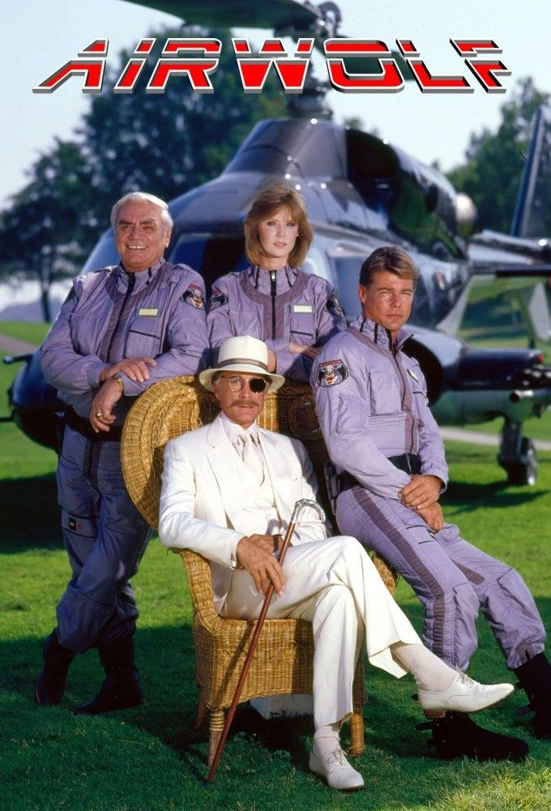
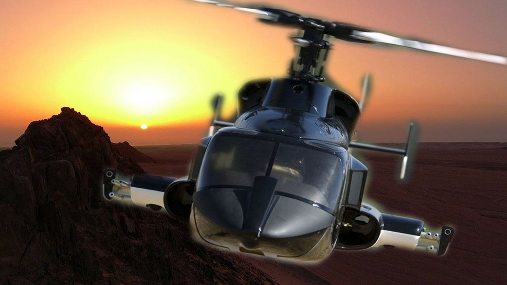
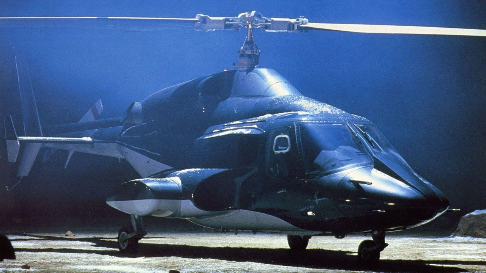

Sommaire8 sections
Je ne me souviens plus précisément de mon âge quand j'ai découvert Supercopter. Je devais avoir 5 ou 6 ans.
Mais cette série m'a vraiment marqué.
D'abord, il y a ce générique, avec sa musique mythique. Puis cet hélicoptère noir, hyper high-tech pour l'époque. La vitesse, l'action au milieu des canyons : de quoi en mettre plein la vue à un enfant.
Je ne l'ai pas revue récemment, mais j'en garde un excellent souvenir.
Ce soir, on retourne à bord de l'hélicoptère noir.

Jan-Michael Vincent, Ernest Borgnine, Alex Cord et Jean Bruce Scott
Supercopter, c'est Airwolf en version originale. Une série d'action américaine créée par Donald P. Bellisario. Elle est diffusée du 22 janvier 1984 au 7 août 1987, d'abord sur CBS, puis sur USA Network pour la dernière saison. Au total : 4 saisons et 79 épisodes. Elle démarre par un pilote de deux heures, diffusé juste après le Super Bowl XVIII.
Jan-Michael Vincent joue Stringfellow Hawke pendant les trois premières saisons. À ses côtés, Ernest Borgnine est Dominic Santini, et Alex Cord est Archangel. Jean Bruce Scott, en Caitlin O'Shannessy, les rejoint pour les saisons 2 et 3. En saison 4, Barry Van Dyke reprend le premier rôle, dans la peau de St. John Hawke.
L'hélicoptère est un Bell 222 modifié. La musique est de Sylvester Levay. La série est produite par Universal Television.
Pour comprendre Supercopter, il faut revenir à Magnum. En 1983, Donald Bellisario y glisse un épisode, « Two Birds of a Feather », pensé comme un pilote déguisé. Il n'aboutit pas, mais l'idée reste.
Bellisario la retravaille, et Airwolf démarre le 22 janvier 1984 sur CBS, juste après le Super Bowl.
Le héros de la série est un hélicoptère. Le vrai appareil est un Bell 222 civil, modifié pour la série par la société JetCopters, à Van Nuys, en Californie. Le dessin des modifications est signé Andrew Probert. Les turboréacteurs qui permettent le vol supersonique, eux, sont de la fiction. Les mitrailleuses sont des maquettes, qui simulent le tir avec des bougies et du carburant.
Pour limiter les coûts, les images du pilote sont réutilisées pendant toute la saison. Le tournage se fait loin des villes, dans les déserts de Californie, d'Arizona et du Nevada, notamment à Monument Valley. La musique, c'est celle de Sylvester Levay.
En saison 2, Jean Bruce Scott rejoint la distribution et les histoires deviennent plus légères, sans succès. Bellisario quitte la série. Les coûts restent élevés, les audiences baissent, et CBS arrête après trois saisons.
USA Network relance une quatrième saison en 1987, tournée à Vancouver avec moins d'un tiers du budget d'origine. Presque toute la distribution est remplacée, et l'hélicoptère d'origine n'est plus disponible.
En France, la série arrive le 21 avril 1986 sur La Cinq.

Airwolf, l'hélicoptère noir de la série
Stringfellow Hawke est un ancien pilote d'essai, solitaire, qui vit retiré dans les montagnes. Son seul vrai ami, c'est Dominic Santini, le pilote qui lui a tout appris.
Un jour, la Firme, une branche de la CIA, a un gros problème. Son prototype ultra-secret, un hélicoptère de combat supersonique baptisé Airwolf, a été volé par son propre concepteur, le docteur Moffet. Il l'a emmené en Libye.
Archangel, numéro deux de la Firme, vient chercher Hawke. Lui seul peut reprendre l'appareil.
Hawke le récupère, mais il refuse de le rendre. Il le cache dans un lieu secret, la « Valley of the Gods », et pose ses conditions. La Firme doit retrouver son frère, disparu à la guerre du Viêt Nam. En attendant, Hawke et Dominic accomplissent des missions pour elle.
La série suit cette alliance fragile : des missions d'espionnage, des ennemis redoutables, et au centre, cet hélicoptère noir que tout le monde veut posséder.
Supercopter repose sur une idée simple : un héros solitaire, un engin hors norme, et une agence en qui il n'a pas confiance.
Hawke est un ancien pilote d'essai, retiré du monde. Il ne rend pas Airwolf à la Firme : il le garde comme monnaie d'échange. La série porte donc dès le départ une défiance envers l'institution. Les agents de la Firme sont à la fois des alliés et des ennemis, et ils essaient souvent de reprendre l'appareil quand l'occasion se présente. Dans la série, ils s'habillent en blanc, comme pour revendiquer le bon camp, et Hawke n'est pas convaincu.
Cette ambiguïté plonge la série dans la guerre froide : espionnage, missions secrètes, ennemis venus d'ailleurs. La première saison est décrite comme sombre, construite autour d'un fil rouge. Et cette tension a une source intime : le frère de Hawke, porté disparu au Viêt Nam.
Airwolf lui-même est conçu comme « un loup déguisé en mouton » : un hélicoptère rapide, armé jusqu'aux dents, qui n'a pas l'air d'une machine de guerre.
Mais dès la deuxième saison, CBS veut une série plus familiale. Le ton s'allège, Hawke et Dominic collaborent davantage avec la Firme. La série perd ce qui faisait sa singularité, et c'est le début de sa chute.

Airwolf, posé
Supercopter n'a jamais vraiment disparu, mais elle a perdu sa place dans les mémoires. Plusieurs raisons à cela.
D'abord, sa trajectoire est cassée en deux. Après trois saisons sur CBS, la chaîne arrête tout, entre baisse d'audiences et coûts trop élevés. USA Network relance une quatrième saison à Vancouver, avec moins d'un tiers du budget d'origine et une distribution presque entièrement renouvelée. Même l'hélicoptère n'est plus le même : les scènes de vol sont recyclées des saisons précédentes.
Ensuite, la série a changé de ton en route. Sombre et feuilletonnante au début, elle devient plus légère dès la saison 2. Une partie du public s'y retrouve, l'autre y perd ce qui l'avait séduit.
Enfin, tout repose sur une machine qui a coûté cher à faire vivre. L'hélicoptère d'origine a été vendu en Allemagne, où il s'est écrasé en 1992.
Mais Supercopter reste là : rediffusée sur plusieurs chaînes en France, elle passe sur Paris Première depuis avril 2019.
Pourquoi remonter à bord de Supercopter aujourd'hui ?
D'abord pour l'objet. Airwolf n'est pas un effet numérique : c'est un vrai Bell 222, transformé pour la série, qui a réellement volé. Les décors, ce sont les déserts de l'Ouest américain, Monument Valley en tête. À l'écran, on sent la matière.
Ensuite pour son héros. Hawke n'est pas un soldat d'élite en uniforme. C'est un solitaire, qui garde l'hélicoptère pour imposer ses conditions à une agence dont il se méfie. Cette méfiance donne à la première saison un ton plus sombre que ce qu'on imagine.
Et puis il y a le générique. Cette musique de Sylvester Levay, qu'on garde en tête des décennies plus tard.
Enfin, pour la sensation que cette série a laissée à beaucoup d'enfants des années 80 : un hélicoptère noir qui file entre les canyons.
La cassette n'est peut-être pas la plus célèbre de l'étagère. Mais elle vaut qu'on la remette dans le lecteur.
Supercopter n'est pas le film culte dont tout le monde se souvient. C'est une série d'action des années 80, avec un héros solitaire, une agence en laquelle il n'a pas confiance, et un hélicoptère noir qui file entre les canyons.
Elle a eu une vie compliquée : trois saisons sur CBS, une quatrième avec un budget réduit et presque toute la distribution changée. Mais l'image reste. Pour beaucoup d'entre nous, c'est celle d'un hélicoptère noir et d'une musique qu'on n'oublie pas.
Alors si vous avez grandi avec elle, ou si vous ne l'avez jamais vue, retournez à bord.
La cassette est dans le lecteur. On rembobine.
Titre original
Airwolf
Pays
États-Unis
Genre
Action · Drame militaire
Diffusion
CBS, 1984–1986, puis USA Network, 1987 (4 saisons, 79 épisodes)
Créateur
Donald P. Bellisario
Production
Universal Television
Musique
Sylvester Levay (thème)
Fil conducteur
Séries TV cultes — EP. 13
SOMEDAY — SÉRIES EP. 13